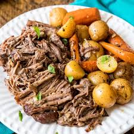

POT ROAST

This classic Pot Roast Recipe is a pre-seasoned roasted chuck roast that is slowly braised in a flavorful beef broth and finished with perfectly cooked vegetables for an amazing home-cooked meal. I’ve always loved making and eating pot roast, and this is the ultimate recipe for comfort.
INGREDIENTS
- Beef chuck roast is the best cut of beef to use. However, you can use brisket, top or bottom round, and sirloin.
- Carrots, celery, and potatoes are the basic vegetables used in a pot roast. This can be enhanced by adding parsnips, turnips, rutabaga, celeriac root, and mushrooms. Options for potatoes are baby Yukon golds or reds, fingerlings, or larger russet potatoes that are quartered.
- I used yellow onions, leeks, and garlic. You can use onions and garlic in this recipe. In addition, you can substitute the yellow onion for a red, white, or sweet one.
- Some tomato paste will help add a touch of sweetness and acidity to the pot roast.
- Regular all-purpose flour is used to make a beurre manié, a thickening agent for the sauce.
- Season the beef on all sides with salt.
- Place on a rack over a sheet tray and place uncovered in the refrigerator for 12 to 48 hours.
- Remove the beef from the fridge and season with pepper.
- Add the olive oil to a large pot over high heat until it smokes.
- Place in the beef, turn the heat down to medium and sear on all sides until it is completely golden brown all around.
- Set the beef aside on a plate and add the onions and leeks, season with salt, and sauté for 4 to 6 minutes. Then, turn the heat down to low medium and continue cooking for 10 minutes.
- Stir in the garlic and cook just until fragrant, which takes 30 to 45 seconds.